MikroTik Network Lab
Project pembelajaran dan praktik jaringan menggunakan MikroTik RouterOS. Project ini mendokumentasikan konfigurasi jaringan, layanan, keamanan, bandwidth management, VPN, wireless, monitoring, testing, dan backup konfigurasi.
Project Overview
Tujuan
Membangun dan mempraktikkan konfigurasi jaringan menggunakan perangkat MikroTik sebagai bagian dari pembelajaran jaringan komputer.
Perangkat & Environment
- MikroTik RB941-2nD
- RouterOS
- WinBox / RouterOS
- WAN melalui interface router
- LAN melalui bridge
- Wireless melalui wlan1
Network Topology
Gambaran topologi jaringan yang digunakan dalam MikroTik Network Lab.
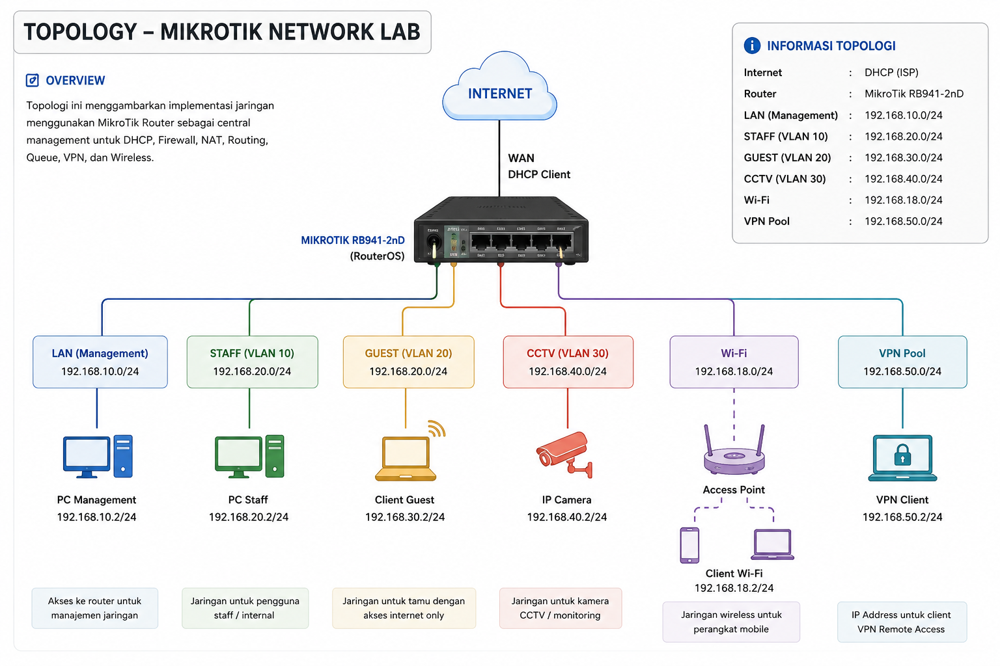
Network Interface
Dokumentasi interface yang digunakan pada perangkat MikroTik dalam project.
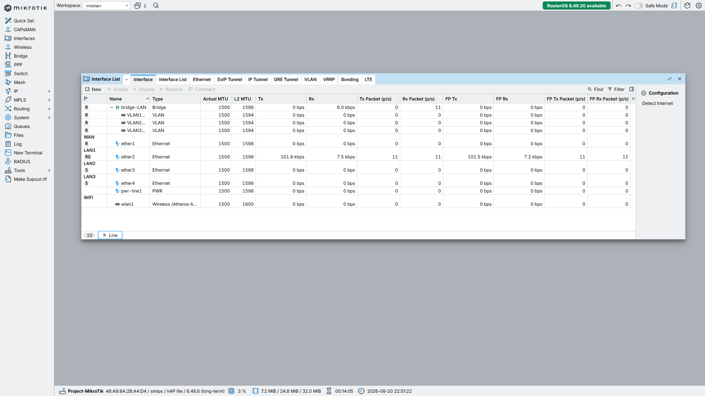
IP Address
Dokumentasi konfigurasi alamat IP pada interface jaringan MikroTik.
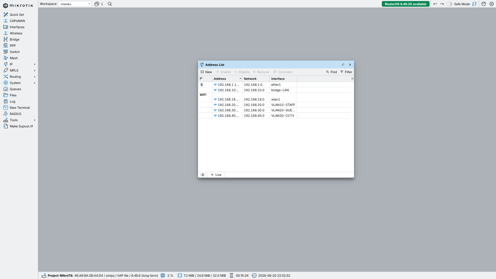
DHCP Server
Dokumentasi konfigurasi DHCP Server untuk pengelolaan alamat IP client pada jaringan.
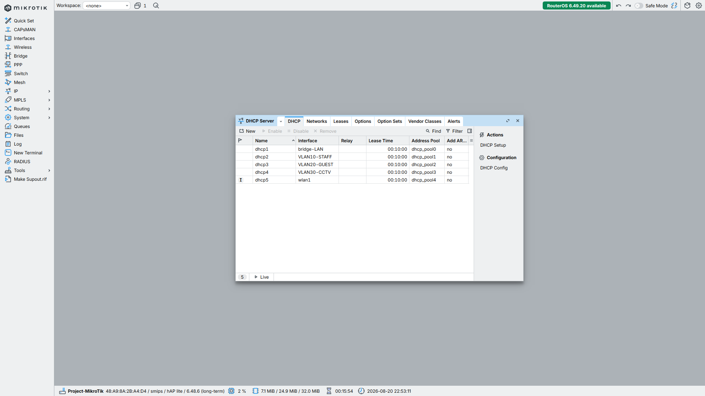
Firewall
Dokumentasi konfigurasi firewall untuk pengelolaan dan pengamanan traffic jaringan.
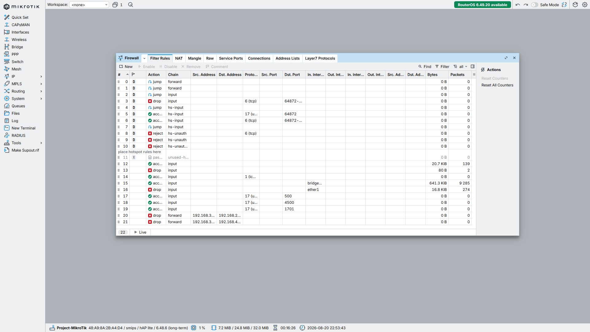
NAT
Dokumentasi Network Address Translation yang digunakan pada project jaringan.
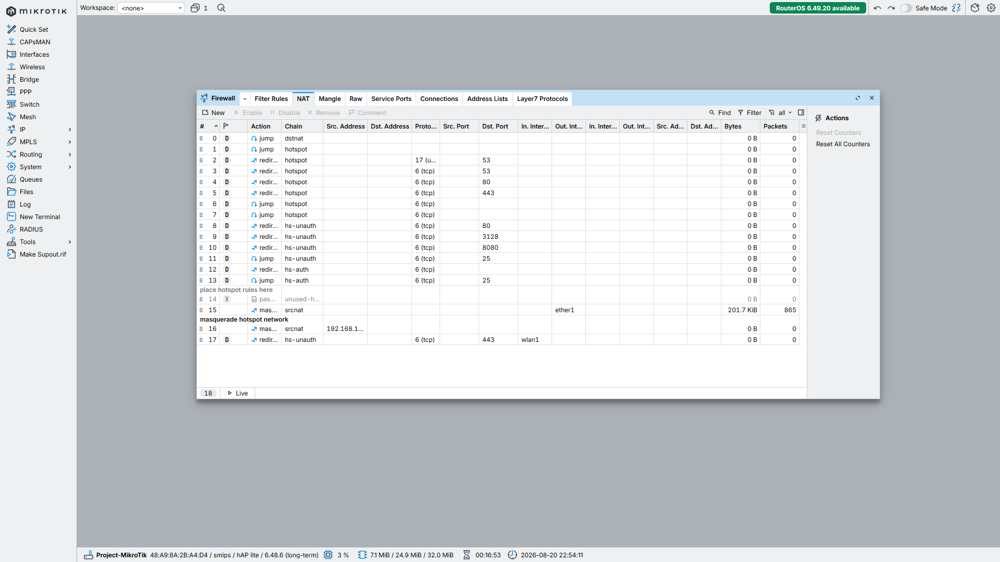
Routing
Dokumentasi konfigurasi routing dan route yang digunakan pada jaringan.
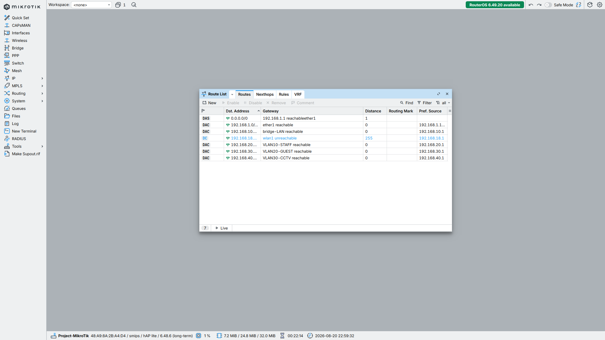
Simple Queue
Dokumentasi pengelolaan bandwidth menggunakan Simple Queue.
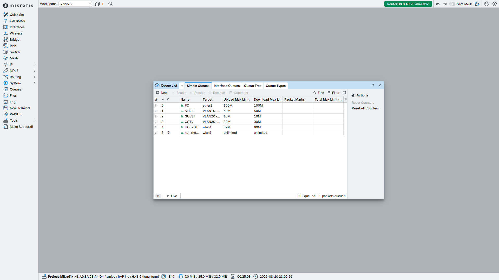
VPN
Dokumentasi konfigurasi VPN pada MikroTik Network Lab.
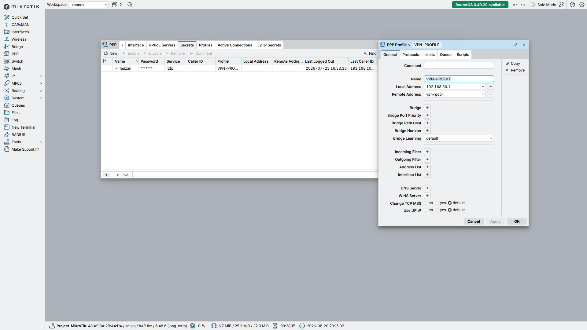
Wireless
Dokumentasi konfigurasi wireless pada perangkat MikroTik.
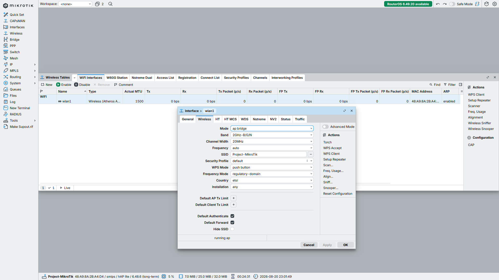
Firewall Mangle
Dokumentasi rule Mangle yang terdapat pada konfigurasi MikroTik project.
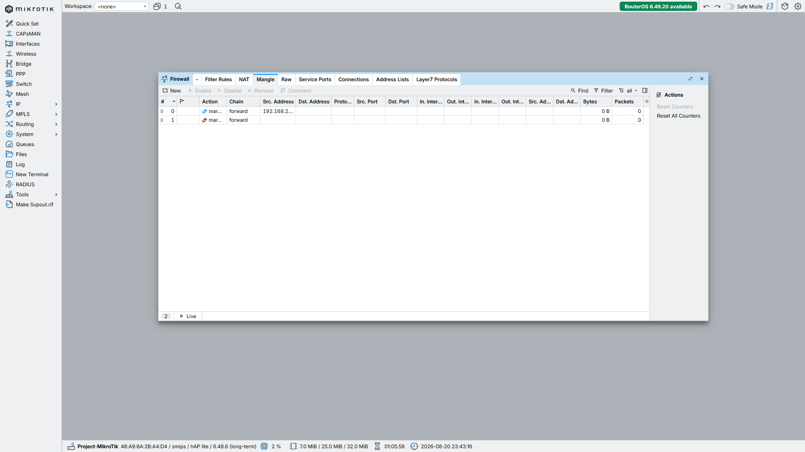
Traffic Monitoring
Dokumentasi monitoring traffic interface untuk melihat aktivitas jaringan.
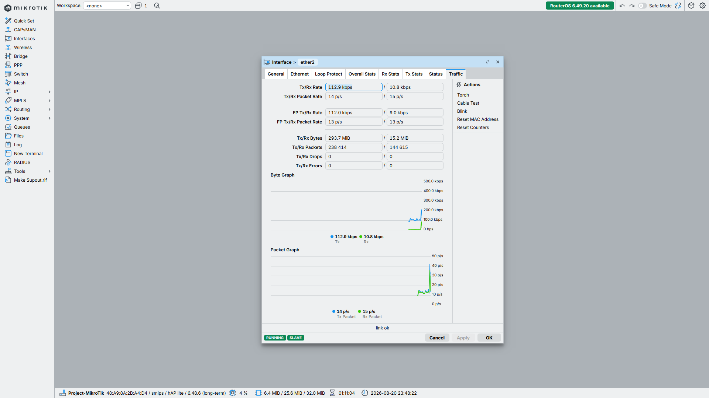
Torch Monitoring
Dokumentasi penggunaan Torch untuk melakukan monitoring traffic secara lebih detail.
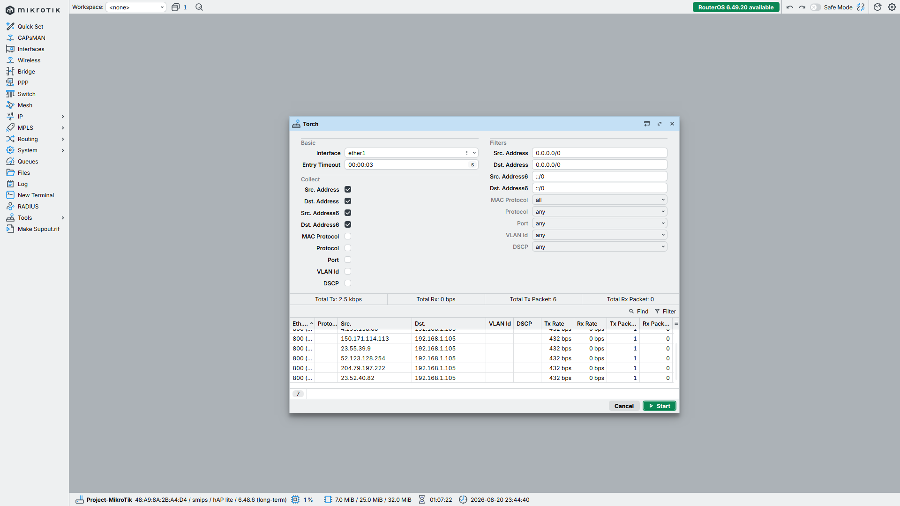
Traceroute Monitoring
Dokumentasi pengujian jalur jaringan menggunakan traceroute.
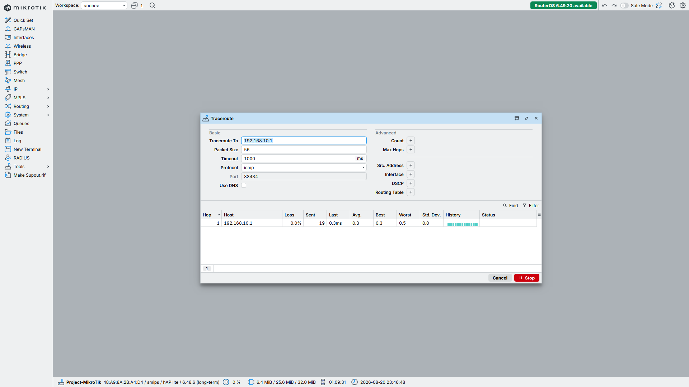
Internet Testing
Dokumentasi pengujian konektivitas internet dari MikroTik menggunakan ping.
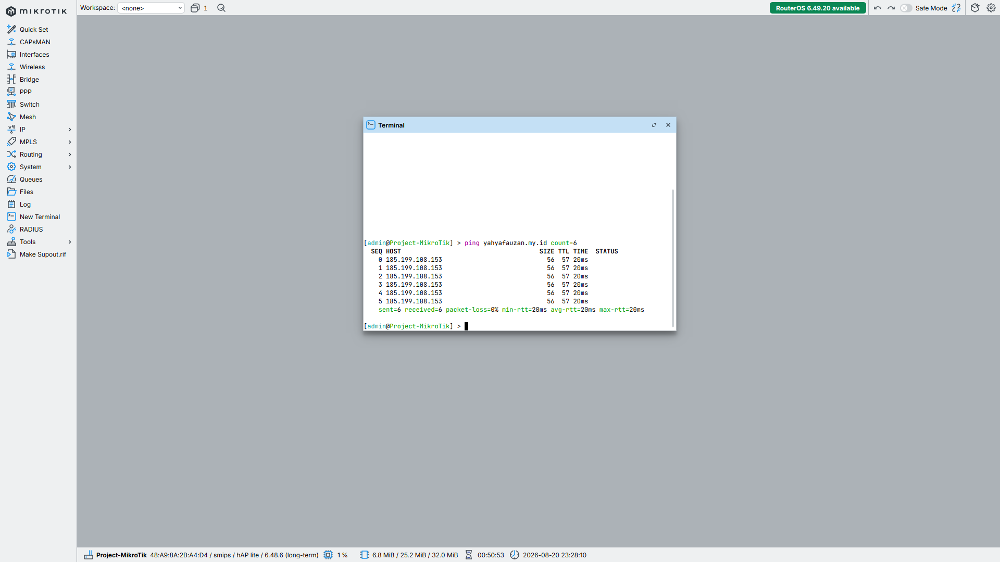
Backup & Project Documentation
Dokumentasi backup konfigurasi sebagai bagian dari pengelolaan project MikroTik.
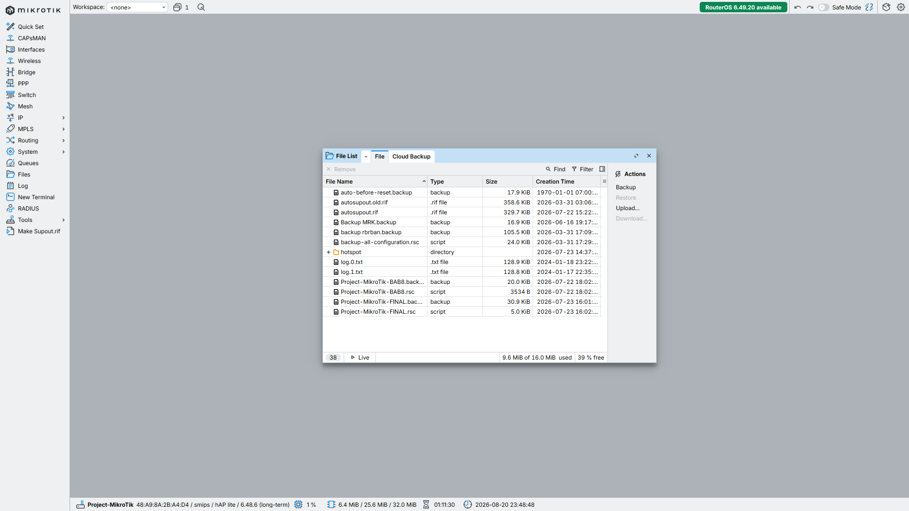
Project Result
MikroTik Network Lab
Project ini mendokumentasikan praktik konfigurasi jaringan menggunakan MikroTik, mulai dari interface, IP addressing, DHCP, firewall, NAT, routing, bandwidth management, VPN, wireless, Mangle, monitoring, testing, hingga backup konfigurasi.
← Kembali ke Portfolio